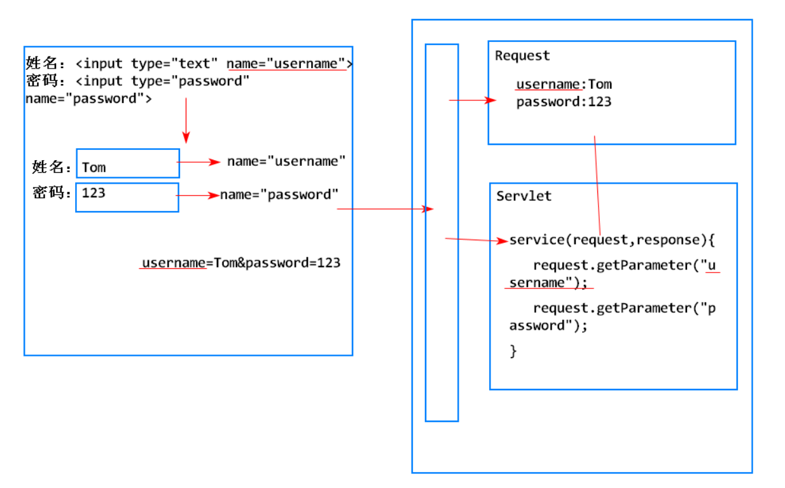
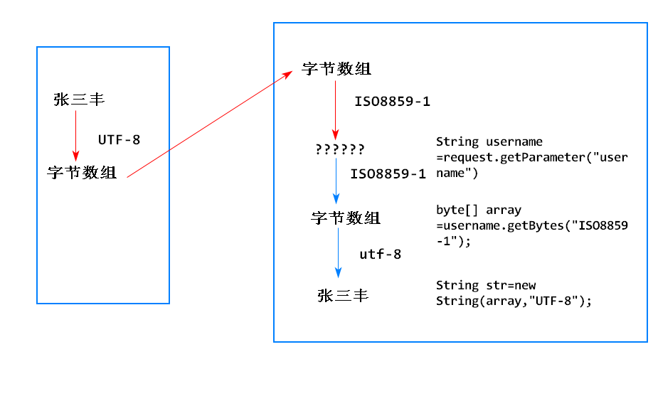

1.狭义上它是实现了servlet接口的java类
2.Servlet是运行在Web服务器上的代码片段(组件),用户处理http请求,是SUN公司定义的javaEE规范
可以简化Web服务端的开发,将复杂的网络通信细节(网络协议)封装到webService中,开发者仅需要提供servlet代码就可以完成Web服务端的开发
1. 创建一个java类,并让其实现servlet接口.
声明一个类，继承HttpServlet
1. HttpServlet是Sun公司提供的Servlet接口的一个实现类
2. HttpServlet实现了Servlet接口中所有的抽象方法
3. 开发者仅需要继承该类，重写所需使用的方法即可

1. 浏览器根据url的域名+端口号和服务器建立连接
2. 浏览器生成请求数据包，并发送请求数据包
3. 服务器收到请求数据包，解析请求数据包，创建request和response对象
4. 服务器将请求数据存入request对象中
5. 服务器调用Servlet的service()，将request和response传入
6. Servlet的service()从request中获取请求数据，将生成的响应数据写入response中
7. 服务器从response中读取响应数据，生成响应数据包，发送给浏览器
8. 浏览器解析响应数据包，在页面上显示响应内容
指可以接受用户请求,为用户提供响应的程序
可以为servlet提供运行环境支撑的程序
tomcat既是Web服务器也是Web容器
由Web服务器负责从请求数据包中解析请求数据，封装好发送给Servlet，开发者在Servlet仅需要调用API，就可以获取数据
1. 通过request对象获取
2. request对象提供了一个API: String value = request.getParameter(String name);

用户提交表单到服务器,servlet接收到底是乱码
1. 浏览器对表单内容编码时,所使用的编码规则是html头标签中charset属性是一致的,当前是UTF-8
2. tomcat对请求参数进行解码是默认使用的是ISO8859-1
3. 编码规则和解码规则不一致导致乱码问题
可以使用request API来解决乱码
对于get请求,tomcat提供了另一种方案
还有一种手动编码
http将请求方式分为8种,其中最常用的用get和post
不同的请求方式所适用的场景及特点不同的，有针对性的使用可以提高请求的效率
1. get请求代表客户端向服务端获取数据
2. 特点:
请求参数直接拼接在url后面